01Низкий поворот
Знакомый поворот стал компактнее. Белый плюс стоит на уровне букв LAND, обе дуги проходят чуть ниже.
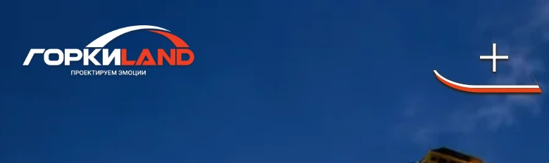
Попробовать на главной ↗Десять композиций на фотографии «Стратосферы». В пяти из них меню открывается нажатием на миниатюру аттракциона. Выберите формат, чтобы сравнить шапки в одном масштабе.
Знакомый поворот стал компактнее. Белый плюс стоит на уровне букв LAND, обе дуги проходят чуть ниже.

Попробовать на главной ↗В кнопке видны центральная башня, верхний шлем и подвесные кресла. Слово «Меню» стоит на одной линии с названием компании.
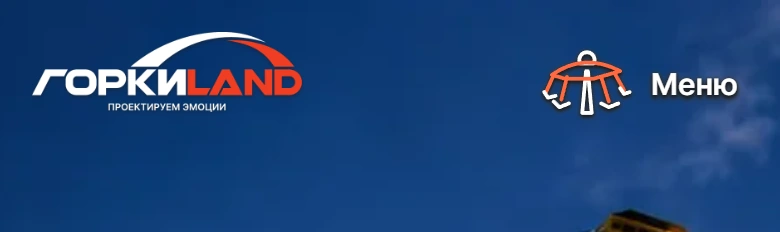
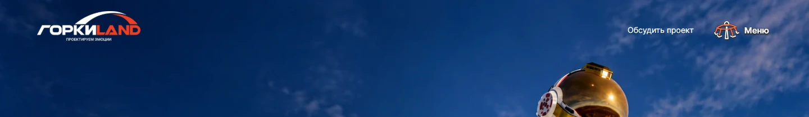
Попробовать на главной ↗Линия от логотипа ведёт к профилю горки. Оранжевая рельсовая кривая поднимается к белому плюсу.
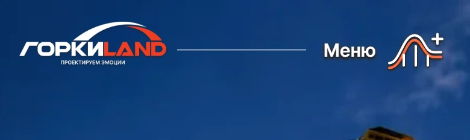
Попробовать на главной ↗Знак компании в центре. Слева — колесо с оранжевой кабиной наверху. Две спицы образуют плюс.
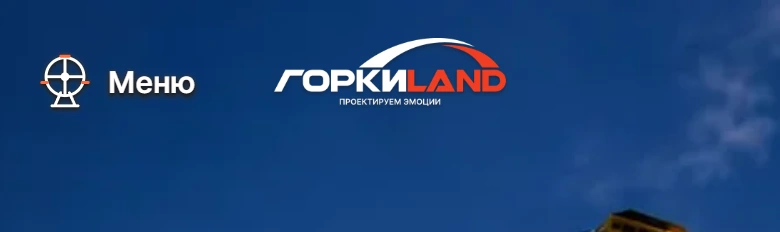
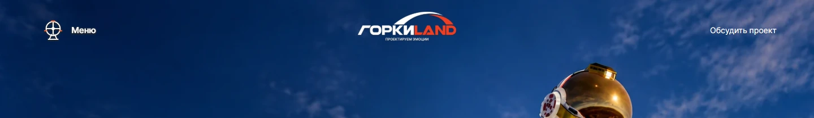
Попробовать на главной ↗Логотип и плюс собраны слева. Короткая вертикальная черта отделяет действие от названия компании.
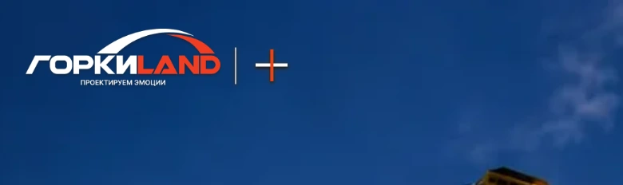
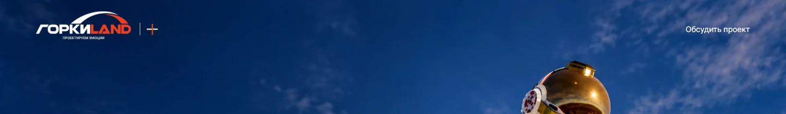
Попробовать на главной ↗На широком экране меню занимает середину между логотипом и ссылкой на проект. На телефоне три позиции собраны в один ряд.
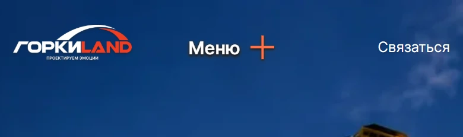
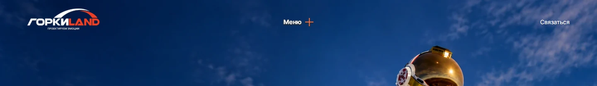
Попробовать на главной ↗Подвес и изогнутый оранжевый корпус образуют маленький корабль. Рядом с ним стоит подпись «Меню».
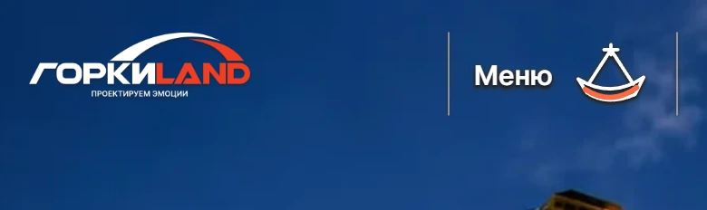
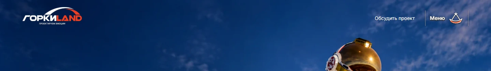
Попробовать на главной ↗Логотип и плюс стоят рядом в центре. Под ними проходят две короткие линии, объединяя пару над фотографией.
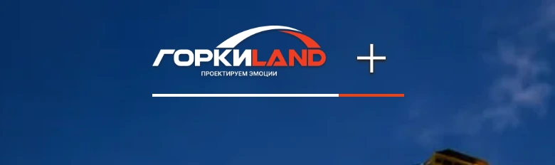
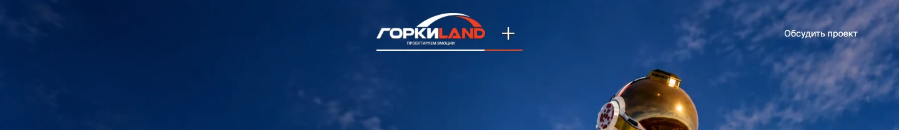
Попробовать на главной ↗Справа — слово «Меню», близкое по высоте к буквам знака. Маленький двухцветный плюс завершает строку.
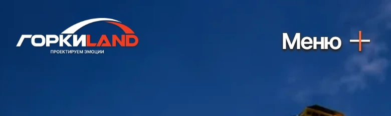
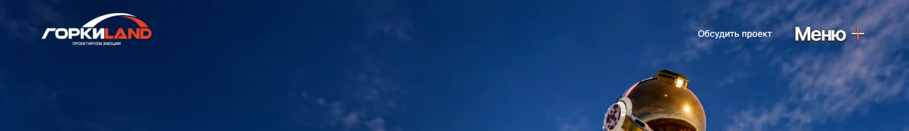
Попробовать на главной ↗Меню открывает строку слева. У машинки видны сиденье, руль и оранжевый бампер. Логотип замыкает строку справа.
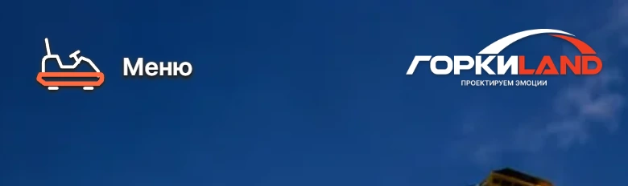
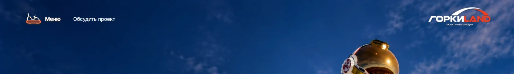
Попробовать на главной ↗